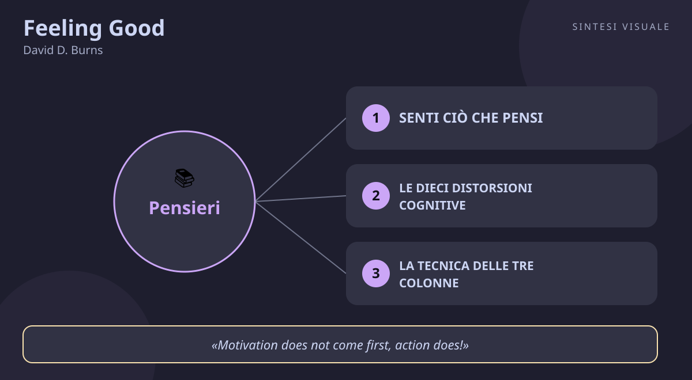

Feeling Good
David D. Burns · Emozioni e umore
«Feeling Good»
- Senti ciò che pensi
- Dieci distorsioni
- Tre colonne
- Azione prima
🧭Introduzione
David D. Burns è uno psichiatra americano, allievo di Aaron T. Beck — il padre della terapia cognitiva — all'Università della Pennsylvania. Negli anni Settanta, mentre la psicoanalisi freudiana dominava ancora gli studi medici, Burns lavorava con Beck a un'idea eretica: la depressione non si cura necessariamente scavando per anni nell'infanzia, ma si può affrontare qui e ora, cambiando il modo in cui pensiamo. Nel 1980 condensò anni di ricerca clinica in questo manuale per il grande pubblico, con la prefazione dello stesso Beck: il libro ha venduto oltre quattro milioni di copie nei soli Stati Uniti, è stato tradotto in decine di paesi ed è ancora oggi tra i libri di auto-aiuto più prescritti dai medici.
Perché conta oggi: ansia, rimuginio, senso di colpa, confronto continuo sui social, procrastinazione, bassa autostima — il libro parla esattamente del rumore mentale che ci portiamo dietro ogni giorno. E lo fa senza farmaci né misticismo: con carta, penna e onestà.
A chi è utile: a chi si sveglia con la testa già piena di pensieri neri, a chi rimanda tutto aspettando "la voglia giusta", a chi si punisce con i "dovrei", a chi prende ogni critica come un verdetto sulla propria persona — e a chi vuole uno strumento concreto, non solo belle parole.
📘Riassunto
La scintilla centrale: non sono gli eventi a farci stare male, sono i pensieri che abbiamo sugli eventi. Se i pensieri sono distorti, l'umore che producono è distorto: correggi il pensiero e cambia l'emozione.
La struttura logica procede in cinque atti:
- Le basi — il primo principio della terapia cognitiva: tutti gli umori nascono dalle cognizioni, cioè dai pensieri. Prima di ogni emozione c'è sempre un pensiero, anche se rapidissimo e automatico.
- Il cuore del libro — le dieci distorsioni cognitive: gli errori ricorrenti del pensiero negativo (tutto-o-niente, ipergeneralizzazione, filtro mentale, squalificare il positivo, saltare alle conclusioni, ingigantire, ragionamento emotivo, affermazioni "dovrei", etichettatura, personalizzazione).
- Gli strumenti — la tecnica delle tre colonne: scrivi il pensiero automatico, individua la distorsione, scrivi una risposta razionale e realistica. Il pensiero esce dalla testa e finisce sul foglio, dove può essere esaminato.
- I casi concreti — capitoli dedicati a procrastinazione ("l'azione precede la motivazione"), senso di colpa, ostilità e critiche, dipendenza da amore e approvazione, autostima.
- La cassetta degli attrezzi avanzata — esercizi quotidiani, il diario dell'umore e, nell'edizione aggiornata, una guida per il lettore ai farmaci antidepressivi.
Il punto di svolta: il capitolo sulle distorsioni cognitive. Il lettore ci si riconosce dentro prima ancora di finirlo — dare un nome al pensiero storto è già metà della cura, perché ciò che ha un nome si può osservare, discutere e correggere.
L'eredità oggi: è il libro che ha portato la terapia cognitivo-comportamentale fuori dagli ambulatori e dentro le case della gente; la lista delle dieci distorsioni è probabilmente la pagina più copiata di tutta la letteratura di crescita personale, e l'idea che "l'azione precede la motivazione" ha cambiato il modo in cui si parla di procrastinazione.
💡Concetti chiave
- Senti ciò che pensi: l'umore non cade dal cielo, nasce dai pensieri del momento — cambia il pensiero e cambia come ti senti.
- Le dieci distorsioni cognitive: il pensiero negativo non è infinito e misterioso, segue dieci schemi riconoscibili — imparali a memoria.
- La tecnica delle tre colonne: pensiero automatico, distorsione, risposta razionale — tutto scritto nero su bianco, mai solo "pensato".
- L'azione precede la motivazione: non aspettare di aver voglia di fare, fai — e la voglia arriverà dopo.
- Dal "dovrei" al "preferirei": le frasi con devo/devi trasformano le preferenze in obblighi e producono colpa — riformulale.
- Descrivi i fatti, non etichettare le persone: niente "sono un fallito" o "è colpa mia per tutto" — attieniti all'evento specifico e alla tua quota reale di responsabilità.
📖1. Senti ciò che pensi
- Definizione il primo principio della terapia cognitiva dice che ogni emozione è preceduta da un pensiero: prima provi un pensiero, poi provi un'emozione. Due persone vivono lo stesso evento (un messaggio senza risposta) e si sentono in modo opposto perché pensano cose opposte ("sarà impegnato" contro "mi sta ignorando").
- Esempio il capo non ti saluta in corridoio. Pensiero automatico: "ce l'ha con me, ho sbagliato qualcosa". Risultato: ansia per tutto il giorno. Stesso corridoio, pensiero diverso ("era distratto, stava pensando alla riunione"): giornata normale.
- Come applicarlo (a) quando senti un'emozione spiacevole, fermati e chiediti "cosa mi sta passando per la testa proprio ora?"; (b) scrivi la frase tal quale, senza edulcorarla; (c) chiediti se esistono almeno altre due spiegazioni possibili dell'evento.
- Errore comune credere che le emozioni siano prove ("mi sento un fallito, quindi lo sono"). Le emozioni sono segnali, non sentenze: vanno ascoltate, poi verificate.
- Collegamento Epitteto, duemila anni prima: "non sono le cose a turbarci, ma i giudizi che diamo sulle cose". Burns lo cita come antenato dell'idea; Daniel Goleman (Intelligenza emotiva) la riprende parlando di autoconsapevolezza.
📖2. Le dieci distorsioni cognitive
- Definizione il pensiero depressivo non è caos, è un repertorio di dieci errori tipici: pensiero tutto-o-niente, ipergeneralizzazione, filtro mentale, squalificare il positivo, saltare alle conclusioni (leggere la mente, predire il futuro), ingigantire/ridurre, ragionamento emotivo, affermazioni "dovrei", etichettatura, personalizzazione.
- Esempio prendi un 7 all'esame e pensi "sono scarso in tutto" (ipergeneralizzazione + etichettatura), ignori i tre 9 precedenti (filtro mentale + squalificare il positivo) e concludi "non troverò mai lavoro" (predire il futuro). Quattro distorsioni in dieci secondi.
- Come applicarlo (a) stampa o copia la lista delle dieci e tienila nel telefono; (b) per una settimana, ogni sera, rileggi un momento storto della giornata e assegna un nome alle distorsioni che ci trovi; (c) conta quale ricorre di più: quello è il tuo "nemico abituale".
- Errore comune usare la lista per giudicarsi ("ecco, distorco tutto, sono proprio malato"). La lista serve a osservare, non a condannare: sei un detective, non un giudice.
- Collegamento Aaron T. Beck, il maestro di Burns, che per primo descrisse questi schemi in clinica; oggi li ritrovi nel modello ABC di Albert Ellis (evento, credenza, conseguenza).
📖3. La tecnica delle tre colonne
- Definizione prendi un foglio e dividilo in tre colonne: a sinistra il pensiero automatico negativo, al centro la distorsione che contiene, a destra una risposta razionale e realistica. Il pensiero esce dalla testa e finisce sul foglio, dove lo puoi guardare in faccia.
- Esempio colonna 1: "alla riunione ho detto una stupidaggine, tutti pensano che sono incompetente". Colonna 2: leggere la mente, etichettatura. Colonna 3: "ho detto una cosa imprecisa, il collega mi ha corretto, la riunione è andata avanti; nessuno ha detto nulla sulle mie competenze".
- Come applicarlo (a) fallo per iscritto, sempre: pensarlo e basta non funziona perché la testa fa sconti ai propri errori; (b) la risposta razionale deve essere credibile, non zuccherosa ("sono un genio" non convince nessuno); (c) rileggi la terza colonna due volte e dai un voto all'emozione prima e dopo, da 0 a 100.
- Errore comune scrivere risposte positive false ("andrà tutto benissimo di sicuro"): la mente le rifiuta e la tecnica perde credibilità. Serve realismo, non ottimismo di facciata.
- Collegamento il journaling espressivo studiato da James Pennebaker (scrivere le emozioni fa bene alla salute mentale); il "diario dei pensieri" usato ancora oggi in ogni percorso di terapia cognitivo-comportamentale.
📖4. L'azione precede la motivazione
- Definizione aspettiamo di "sentirci pronti" per cominciare, ma funziona al contrario: la motivazione non viene prima, viene dopo. Cominciare — anche in piccolo — genera i primi risultati, che generano la voglia di continuare.
- Esempio devi sistemare il garage e aspetti il sabato "giusto" da tre mesi. Decidi di fare solo 10 minuti, giusto per iniziare: dopo 10 minuti sei nel flusso e ne fai 40. La voglia è arrivata alle 10:10, non alle 10:00.
- Come applicarlo (a) spezza il compito in un'unità ridicola (5 minuti, una pagina, una telefonata); (b) prima di iniziare, prevedi su un foglio quanto sarà soddisfacente da 0 a 10, poi registra quanto lo è stato davvero: quasi sempre avevi sottostimato; (c) programma l'azione a orario fisso, non "quando mi va".
- Errore comune confondere la pigrizia con un problema di carattere ("sono fatto così"). Per Burns è un problema di metodo, non di identità: cambi il metodo e il comportamento segue.
- Collegamento James Clear (Atomic Habits) con la regola dei due minuti e l'ambiente progettato per iniziare facile; la "attivazione comportamentale", oggi trattamento standard contro la depressione.
📖5. Dal "dovrei" al "preferirei"
- Definizione le frasi con devo, dovrei, bisogna sono, secondo Burns, la distorsione più corrosiva: trasformano una preferenza ("mi piacerebbe fare sport") in un obbligo morale ("devo fare sport") e ogni fallimento diventa colpa. La cura è riformulare: dal dovere alla preferenza.
- Esempio "dovrei chiamare mia madre più spesso, sono un figlio ingrato" diventa "preferirei sentirla due volte a settimana perché mi fa stare bene, e stasera la chiamo". Stesso obiettivo, zero frustata: la colpa sparisce, resta il piano.
- Come applicarlo (a) per un giorno annota ogni "dovrei/devo" che ti dici; (b) per ciascuno chiediti: lo voglio davvero o lo esige una regola ereditata?; (c) riscrivilo come preferenza concreta con quando e come ("preferirei... quindi giovedì alle 19 faccio...").
- Errore comune buttare via ogni regola e diventare permissivi ("allora non devo niente a nessuno!"). Burns non predica il lassismo: l'obiettivo resta, cambia solo il carburante — dal senso di colpa alla scelta.
- Collegamento Albert Ellis e la sua guerra ai "must" (doverismi) nella terapia razionale-emotiva; Stephen Covey (Le 7 regole per avere successo) sul distinguere i valori scelti dalle pressioni subite.
📖6. Descrivi i fatti, non etichettare le persone
- Definizione l'etichettatura appiccica a una persona intera (te compreso) un giudizio globale a partire da un singolo evento ("ho sbagliato" diventa "sono un fallito"); la personalizzazione ti fa sentire responsabile di cose che non hai causato. La cura: descrivere l'evento specifico e calcolare la tua quota reale di responsabilità.
- Esempio il progetto del team viene bocciato. Versione etichetta: "sono un incapace, rovino tutto". Versione fatti: "la mia parte era pronta in tempo; il cliente ha cambiato i requisiti a metà strada; il capo ha presentato male i tempi. La mia quota: potevo segnalare prima il rischio slittamento".
- Come applicarlo (a) quando ti sorprendi a dire "sono..." seguito da un insulto, fermati; (b) riscrivi la frase parlando solo di comportamenti ("ho fatto / non ho fatto X"); (c) per i sensi di colpa, elenca tutti i fattori che hanno contribuito e assegna percentuali: quasi mai arrivi al 100% tuo.
- Errore comune scivolare nell'autoassoluzione totale ("allora non è mai colpa mia"). L'obiettivo non è colpevolizzare né assolvere, è misurare: la responsabilità giusta, né un grammo di più né uno di meno.
- Collegamento Carol Dweck (Mindset): lodare il processo ("hai lavorato bene su X") invece dell'etichetta ("sei intelligente"); la comunicazione non violenta di Marshall Rosenberg, che separa osservazioni e giudizi.
💬Citazioni da ricordare
"You feel the way you do right now because of the thoughts you are thinking at this moment." — È l'intero libro in una frase: se l'umore nasce dai pensieri, allora hai una leva su cui agire ogni giorno.
"Motivation does not come first, action does!" — Ribalta la scusa più comune del mondo ("non ho voglia"): la voglia è il risultato, non il prerequisito.
"The first principle of cognitive therapy is that all your moods are created by your 'cognitions,' or thoughts." — Il fondamento teorico: niente magia, solo il legame tra ciò che pensi e ciò che provi, verificabile da chiunque con carta e penna.
🌍Esempi di oggi
- Il messaggio visualizzato senza risposta. Mandi un CV o un messaggio importante, vedi la spunta blu e parte il film: "non gli interesso, ho scritto male, non valgo". È lettura della mente più predizione del futuro: la tecnica delle tre colonne ti fa scrivere l'ipotesi alternativa ("è impegnato, risponde domani") e l'ansia scende prima ancora della risposta vera.
- La riunione dove hai taciuto. Esci pensando "non ho detto niente, penseranno che non capisco nulla". Filtro mentale (ignori le tre volte che hai annuito con cognizione) più etichettatura. Riformulato: "in questa riunione ho preferito ascoltare; la prossima preparo un intervento". Stesso fatto, umore diverso.
- La palestra rimandata da gennaio. Aspetti la motivazione che non arriva e ogni mese aggiungi un "dovrei" alla collezione dei sensi di colpa. Protocollo Burns: 10 minuti soli, oggi alle 18, scarpe già pronte vicino alla porta. L'azione apre la strada e il "dovrei" diventa "preferisco muovermi perché poi dormo meglio".
🛠️Azioni pratiche
- Scrivi la tua prima scheda a tre colonne: scegli un pensiero negativo ricorrente, compilala stasera e rileggi la risposta razionale domani mattina. Vota l'emozione prima e dopo, da 0 a 100.
- Fai la caccia alla tua distorsione abituale: per tre giorni annota sul telefono ogni pensiero storto e dagli un nome dalla lista delle dieci. Alla fine conta: il vincitore è il tuo prossimo bersaglio.
- Lancia un esperimento da 10 minuti: prendi il compito che rimandi da più tempo, fai solo i primi 10 minuti con timer, prevedi e registra la soddisfazione. Ripeti per tre giorni di fila.
💎Da portare a casa
Non puoi controllare tutto ciò che ti accade, ma puoi sempre esaminare ciò che pensi di ciò che ti accade — e lì dentro c'è quasi tutta la tua serenità.
💬Approfondimento in chat
Vuoi scavare più a fondo? Rispondi con il numero di un concetto (1-6) e lo espando con altri esempi ed esercizi, oppure fammi una domanda su un tema: emozioni, stress, autostima, procrastinazione, relazioni, carriera...
🖼️In un colpo d’occhio

Tocca l’immagine per ingrandirla.